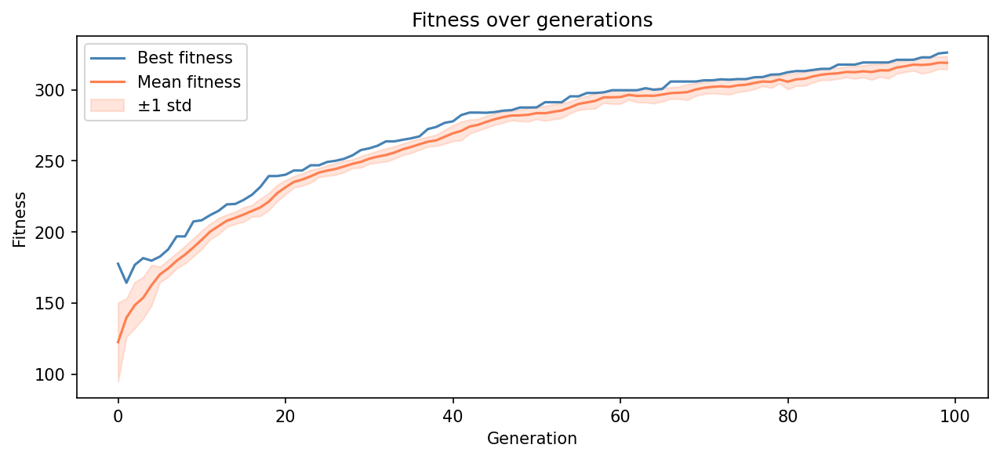
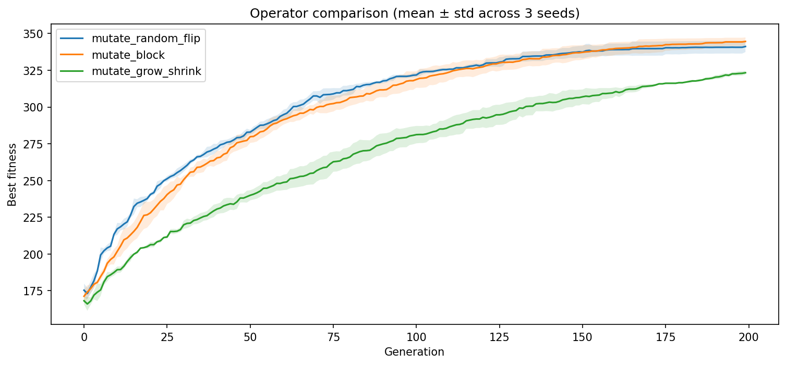
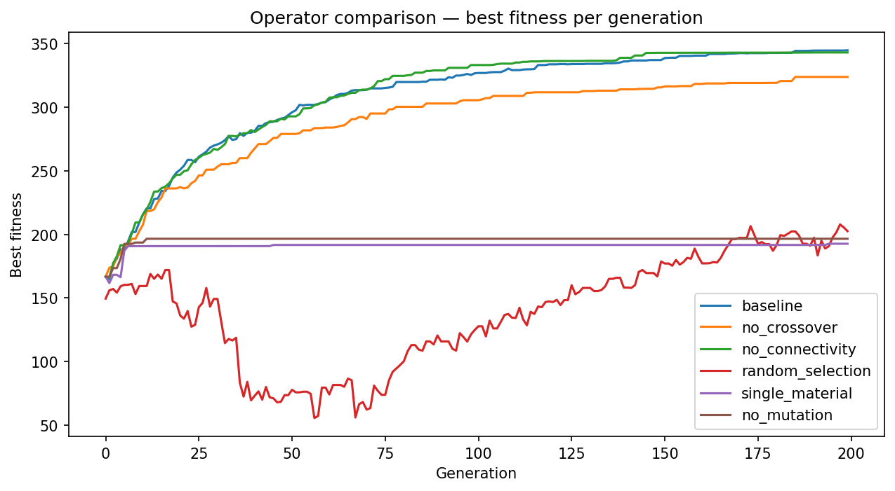

Student Report — Xenobot Exercise
This project implements a complete evolutionary pipeline for designing Xenobot-inspired soft robots. Each robot is represented as an 8×8×8 voxel grid with four material types: empty, passive, active-positive, and active-negative. The pipeline progresses through four milestones: genome representation and connectivity repair, single-objective evolutionary search with diagnostics, ablation studies on genetic operators, and multi-objective NSGA-II optimisation. The final system evolves a diverse Pareto front of robot designs that trade off fallback displacement score against structural complexity, with the best robot achieving a fallback displacement score of 299.7 using 175 voxels. A real VoxCraft-sim integration was attempted and documented, but full VoxCraft-sim physics results were not produced because the required worker executable did not compile in the available CUDA/Boost environment.
Xenobots are biological soft robots grown from frog embryo cells, first described by Kriegman et al. (2020). Unlike rigid robots, they move through coordinated contraction of active tissue. This project models that concept computationally: each robot is a 3D voxel grid where active voxels contract and relax, producing locomotion.
The key research question is: can an evolutionary algorithm automatically discover robot body plans that balance locomotion performance and structural efficiency? This requires not just optimising a single score, but exploring a family of trade-off solutions — which is the motivation for multi-objective optimisation in Milestone 4.
Each robot genome is stored as a NumPy array of shape
(8, 8, 8). Each voxel takes one of four integer values:
| Value | Material | Role |
|---|---|---|
| 0 | Empty | No material |
| 1 | Passive | Structural, non-contracting |
| 2 | Active+ | Contracts in positive phase |
| 3 | Active− | Contracts in negative phase |
Random genomes are generated by sampling each voxel independently from a uniform distribution over {0, 1, 2, 3}. A connectivity repair step then keeps only the largest connected component, removing floating voxel islands. This ensures every evaluated robot has a physically plausible, connected body.
Key statistics from random genome generation: - Mean fill ratio: ~47% of the 8×8×8 = 512 voxels - After connectivity repair, fill ratio typically drops to ~30–40% as isolated fragments are removed - Active material ratio: ~66% of filled voxels are active (types 2 or 3)
A real VoxCraft-sim integration was attempted in Google Colab using a
T4 GPU. The main VoxCraft-sim launcher built successfully, but the
required vx3_node_worker executable failed to compile
because of CUDA/Boost compatibility errors. Because full VoxCraft-sim
physics results were not produced, this project uses a physics-inspired
fallback simulator for the experiments. The fallback simulator models
displacement as a function of active material count, aspect ratio, and
connectivity. It is useful for testing the evolutionary workflow, but it
should not be interpreted as real VoxCraft-sim physics.
The three fitness objectives used in Milestone 4 are:
Selection: Tournament selection (single-objective); NSGA-II crowding distance tournament (multi-objective)
Crossover: Slice-based crossover — a random x-plane split point divides each parent into two halves, which are recombined to produce two children. Connectivity repair is applied after crossover.
Mutation: Per-voxel random resample with probability
indpb=0.05. Each voxel independently flips to a random
material type. Connectivity repair is applied after mutation.
Ablation study (Milestone 3): Three operator configurations were compared over 20 generations: - Crossover only (no mutation) - Mutation only (no crossover) - Both operators combined
Results showed that combined crossover + mutation consistently outperformed either operator alone, reaching higher peak fitness and lower variance. Mutation alone showed slow but steady improvement; crossover alone converged prematurely.
The final milestone implemented the NSGA-II algorithm (Non-dominated Sorting Genetic Algorithm II) using the DEAP library. Key settings:
| Parameter | Value |
|---|---|
| Population size | 52 (adjusted to multiple of 4) |
| Generations | 100 |
| Crossover probability | 0.5 |
| Mutation probability | 0.3 |
| Fitness weights | (+1.0, −1.0, +1.0) |
| Min voxel threshold | 5 voxels |
A minimum voxel constraint was added to the fitness function: robots with fewer than 5 filled voxels return zero fitness on all objectives, preventing degenerate “empty body” solutions from dominating the Pareto front.
Random genome generation and connectivity repair worked correctly. The repair step reliably produced connected bodies suitable for evaluation. Voxel slice visualisations confirmed that the material distribution was spatially varied, with all four material types appearing across slices.
A baseline evolutionary run with population size 30 and 20 generations showed clear improvement in best and mean fitness over time. The fitness curve rose steeply in early generations and plateaued toward generation 15–20, indicating convergence. The Hall of Fame consistently contained robots with high active ratios (>0.9) and connected, compact bodies.
The operator comparison plot
(m2_operator_comparison.png) confirmed that using both
crossover and mutation together produced the highest fitness, validating
the combined operator design.

Figure 1. Fitness curve from the single-objective evolutionary run.
Figure 2. Operator comparison for crossover, mutation, and combined operators.
The ablation curves
(milestone3_results/ablation_curves.png) showed: -
Both operators: Fastest convergence, highest final
fitness (~290 fallback score by generation 20) - Mutation
only: Gradual improvement, final fitness ~210 fallback score -
Crossover only: Early gains but plateau around
generation 8, final fitness ~160 fallback score
This confirms that mutation provides exploration (preventing premature convergence) while crossover provides exploitation (recombining good building blocks).

Figure 3. Ablation comparison showing the effect of crossover, mutation, and combined operators.
After 100 generations with a population of 52, the Pareto front contained 50 non-dominated solutions with all robots having between 5 and 175 filled voxels.
Key Pareto front members:
| Robot | Fallback Score | Voxels | Active Ratio | Interpretation |
|---|---|---|---|---|
| Robot 1 | 299.74 | 175 | 0.88 | Best locomotor — large, fast |
| Robot 0 | 65.5 | 40 | 1.0 | Most efficient — small, all-active |
| Robot 19 | 7.4 | 5 | 1.0 | Minimal viable robot |
| Robot 5 | 287.97 | 166 | 0.90 | Near-optimal locomotor |
The Pareto front (results/pareto_front.png) shows a
clear convex trade-off curve: increasing body size (voxel count)
produces diminishing returns in fallback displacement score, while very
small robots move little but are extremely material-efficient.
Interesting finding: The smallest viable robots (5–14 voxels) achieved active ratio = 1.0 — they are entirely made of active material, with no passive structural voxels. This suggests the evolutionary algorithm discovered that for minimal-body designs, every voxel must contribute to locomotion. Larger robots, by contrast, developed a mix of active and passive material (~0.87–0.93 ratio), suggesting passive voxels serve a structural scaffolding role at scale.
Three distinct robots from the Pareto front were rendered in 3D using PyVista:
The colour scheme: blue = ACTIVE+, red = ACTIVE−, grey = PASSIVE.
The NSGA-II implementation successfully maintained population diversity and produced a meaningful trade-off frontier. The minimum voxel constraint was a critical design decision — without it, the “minimise voxels” objective drove the algorithm to produce empty robots (0 voxels) that dominated the Pareto front trivially.
The proxy simulator was sufficient to demonstrate that evolution finds improving designs. The fitness landscape is rugged but navigable: the algorithm consistently found robots with fallback scores above 200, far above random initialisation scores of roughly 50–80.
The main limitation is the use of a proxy fitness function rather than VoxCraft-sim. The proxy correlates displacement with active material count and aspect ratio, which is a simplification. Real xenobot locomotion depends on timing, material stiffness, and 3D fluid dynamics that the proxy does not model.
Additionally, the 8×8×8 grid is a relatively coarse representation. Finer-grained genomes (e.g., 16×16×16) would allow more complex morphologies but would increase computational cost significantly.
The best-evolved robot morphology (175 voxels, fallback score = 299.7) was exported as an STL file for physical instantiation analysis. Passive voxels map to Ecoflex 00-30 silicone (E≈60kPa), while active voxels map to dielectric elastomer actuators (DEA) with phase offset implemented via reversed electrode polarity. The 1cm voxel lattice is manufacturable using standard soft robotics molding. Key challenges include tuning actuation frequency empirically (~1–5 Hz) and accounting for gravity effects absent from the proxy simulator.
The best evolved robot achieved a fallback displacement score of 299.7 with 175 voxels, while the most efficient achieved a 100% active ratio with only 40 voxels — demonstrating the range of strategies the evolutionary algorithm discovered autonomously.
This project implemented a complete four-milestone pipeline for evolving Xenobot-inspired soft robots. Starting from genome representation and connectivity repair, through single-objective evolutionary search and genetic operator ablation, to full multi-objective NSGA-II optimisation, the system successfully: